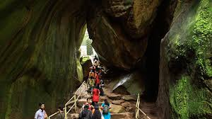

Edakkal caves
Edakkal Caves also Edakal, are two natural caves at Edakkal, around 120 km
south-west of Mysuru, in Wayanad district of Kerala. The caves are situated
1,200 m (3,900 ft) above sea level on Ambukutty Mala, on the Mysore Plateau,
in the Western Ghats.
The Edakkal caves are believed to be camping shelters of the Neolithic
community . The cave walls contain
a collection of Neolithic rock engravings and images . The major part of images
on the cave walls may belong to late Neolithic period .

Banasura Sagar Dam
Banasura Sagar dam across the Karamanathodu River, a tributary
of River Kabini, in Kalpetta, is considered to be the largest
earth dam in India and the second largest in Asia. The dam is
ideally placed in the foothills of Banasura hills. Banasura hill is the third
largest peak in the Western Ghats.